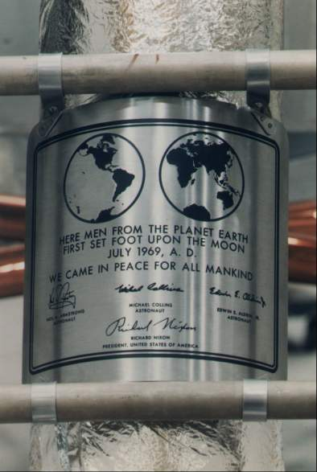

The coming flight of Apollo 11 captured more worldwide attention than any previous mission. Countless numbers of persons tried to identify with, seek a meaning for, and fashion or obtain some keepsake of mankind's first visit to a celestial neighbor. These desires were expressed in poetry, in prose, in symbolic articles, and in pictorial evidence. Whole issues of journals, sections of newspapers, brochures, television and radio specials, books, bric-a-brac, stamps, medallions, photographs, pieces of clothing, record albums, and magnetic tape records commemorated the occasion. Some persons made suggestions, some bluntly demanded a piece of the moon, and some sought to get as close as possible to the launch and flight control sites. Most of the millions relied on radio, television, and newspapers for a firsthand account of the manned lunar landing experience.
NASA officials moved carefully and deliberately in meeting the demands brought on by Apollo 11. Early in 1969, Julian Scheer, Assistant Administrator for Public Affairs in Washington, wrote Gilruth, stressing past policy and operational philosophy. The agency, Scheer said, did "not seek coverage of space but [would] break our backs making our facilities and our people available," with "no free rides, no free meals, no glad-handing."
The crux of Scheer's letter was his determination to get Gilruth's Public Affairs Officer, Paul Haney, out of a dual role as full-time mission commentator and as supervisor of the whole range of public affairs activities in Houston. When Scheer first came to NASA in 1963, he found that John A. Powers appeared to be favoring the television industry in the coverage of Mercury events; Scheer also disliked the identification of Powers as the "Voice of Mercury Control." The Headquarters leader sent Haney to Houston to replace Powers. In the ensuing years, although he trained a team of mission commentators, Haney seemed to be emulating Powers, becoming known as the "Voice of Gemini" and then moving into a similar role for Apollo. Scheer then gave the Houston public affairs leader the choice of remaining as mission commentator or confining himself to his duties as head of the Public Affairs Office. When Haney chose the former, Scheer changed his mind. He asked Gilruth to transfer Haney to Washington. Instead, Haney resigned. Scheer then sent Brian M. Duff from Headquarters to run the Houston activities. Duff did not talk from "Apollo Control" at all. The new voice became voices - John E. McLeaish, Terry White, John E. Riley, and Douglas K. Ward - from the public information section of Houston's Public Affairs Office.34
Scheer then turned to another objective - making the Apollo 11 astronauts more available to the news media than past crews had been. He wanted the public to see the pilots as human beings, to foster a better understanding of their training and goals. In a letter to Slayton, Scheer warned that there would be changes. The practice of allowing one stilted crew press conference with each network, for a limited time and in sparse surroundings, had presented the astronauts as stereotypes. Scheer wanted each crew member to spend at least a full day with each of the networks, with the wire services participating, in backgrounds selected by the media. If, for example, they wanted the commander in Ohio, his home state, then he should go to Ohio and give the reporters a more intimate glimpse of Armstrong, the man, rather than Armstrong, the space flight technician. Scheer asked for more time with the astronauts for still and motion pictures. He also suggested that the wives of the Apollo 11 crews might attend a tea given for the women of the press corps. Scheer reminded Slayton that the networks, on occasion, would cover the mission for 24 hours at a stretch and would need many human interest stories as fillers. The public would be better able to share in the ventures of these men on the moon if it knew who they were, why they were there, and what they were doing, a knowledge that could be achieved only through more time with the men and better training documentation, films, and taped reports of the progress to the launch.35
Slayton gave in on a few points - some parts of training, for example - but dug in his heels on the other demands. "Homes and wives are personal," he snapped, "and landing on the moon does not change that." Slayton remarked that he did not think any "hard sell" was necessary for Apollo 11, adding that "one rose does not make a summer (or something like that)." He went on, "This is just another mission which may land on the moon first, but definitely will not go anywhere on schedule if we cannot keep the crew working instead of entertaining the press."
Scheer did not give up, however. Low wrote Gilruth that 30 members of the press would attend a rehearsal of the lunar surface extravehicular demonstration requested by Headquarters on 18 April; but there would be no news coverage of the formal session four days later. Scheer fought that decision and won. Phillips notified Low that Mueller and Scheer had agreed to let a five-man news media pool watch the formal session. In May, Slayton and Duff worked out an understanding for more extensive reporting of various phases of training. And on 5 July, only 11 days before launch, the crew talked with the press about the mission. Armstrong, Collins, and Aldrin were shielded from other than visual contact by a plastic booth, to preserve the integrity of their prelaunch quarantine, but the "armor" had been pierced.36
Scheer also suggested that top-level officials from both Headquarters and the field elements - most of whom were more used to writing memoranda, notes, and papers for technically oriented audiences - participate in drafting articles directed at the public for a New York Times project. In April, he asked these managers to make out invitation lists for the next two launches and to choose a cross-section of guests who had no direct connection with aerospace activities and who had never seen a launch.37 With the approach of Apollo 11, Scheer assumed a stronger, more aggressive role in NASA's public affairs, and he used the pressures of the mission as a lever to get the agency to accept his thinking.
One item of worldwide public impact - television - raised no issues whatsoever on this flight. Slayton even urged the need for some kind of erectable antenna. The crewmen could not, after all, be expected to wait patiently in the lander until the earth moved Goldstone, California, and its 64-meter radar dish into line with the spacecraft - before they climbed out onto the surface. There was also some question whether the Goldstone facility would be available, since it was needed for a Mariner flyby of Mars in July. At a management council meeting in March, the prospect of doing without the big California dish, as well as a similar one at Parkes, Australia, forced agreement on a contingency plan for a portable antenna. Eventually, both Goldstone and Parkes were free to cover Apollo 11, but proper alignment with Goldstone was still a problem. Low decided to delay the lunar module's descent by one revolution to make sure "that we will have Goldstone coverage." If the launch was delayed and if Parkes was better situated to pick up the signals, the relay would travel from the lunar module to Parkes, to Sydney by microwave, across the Pacific Ocean via synchronous satellite Intelsat III, to the control center in Houston, to the television networks, and thence to television sets throughout most of the world. Goldstone would shorten that route.38
Some Apollo managers were worrying about the quality of the pictures they could expect. Looking at a photograph of a simulation, Phillips observed to Low that the first step onto the lunar surface might be in the shadows. And the light might be too bright in the stowage area, as the astronauts unloaded the experiments package. Phillips asked Low to see about this, since "sharing with the world our historical first steps onto the moon warrants our efforts to maximize this return." Low did not believe the results would be as bad as Phillips feared, but Houston set up scale models under various lighting conditions to make sure of good coverage of the crewman as he descended to the lunar surface. Before he left Houston, Paul Haney had suggested that the surface camera be set up to photograph the liftoff from the moon. The idea was exciting, but it was too late to arrange it for Apollo 11. It would have to wait for a future mission.39
Color television was so effective on Apollo 10 that it was adopted for the following mission, but only in the command module. Faget was more than mildly upset when he learned that so much of the television, motion, and still photography planned for Apollo 11 would be in black and white. To him, it was "almost unbelievable" that the culmination of a $20-billion program "is to be recorded in such a stingy manner." Low explained that some of the scientists insisted on black and white film, because it had a higher resolution than color film. Furthermore, with no atmosphere to absorb the solar energy in the ultraviolet, color film might not turn out well on the lunar surface.40
In January 1969, NASA began work on plans to commemorate Apollo 11 symbolically. Phillips wrote Gilruth, Wernher von Braun, and Kurt Debus that ideas discussed at Headquarters included planting United Nations and United States flags, putting decal flags of U.N. member states on the lunar module descent stage, and leaving a capsule on the surface with information about the Apollo program and personnel and copies of international agreements. Gilruth asked Johnston to canvass the top Houston staff for suggestions. The consensus was that the American flag should be raised in a simple ceremony. This proposal was supported by private citizens from East Coast to West. Slayton said the pilots would probably carry personal items, as had been done in the past, but most of these would be brought back. All they intended to leave on the lunar surface, besides the descent stage, would be such things as the experiments, backpack, and lunar overshoes. Slayton added that he had no objection to anything that might be decided on as a symbol of the mission, but it must meet weight and stowage requirements and place no additional training demands on the crew.41
Paine assigned Associate Deputy Administrator Willis Shapley as chairman of a committee* to draft recommendations. Shapley's group met for the first time on 1 April and considered three categories: articles to be left by the astronauts (flag or flags, commemorative plaque), articles to be attached to the descent stage (inscriptions, documents, microfilm), and articles to be taken to the moon and brought back (photographs, flags, stamp dies, tokens). The chairman reported that Scheer and Assistant Administrator for International Affairs Arnold W. Frutkin were working out words for a plaque. Shapley also said that suggestions were being solicited from the Smithsonian Institution, the Library of Congress, the Archivist of the United States, the NASA Historical Advisory Committee, the Space Council, and congressional committees. The flag proposal was the most persistent. There were also discussions about carrying miniature flags of all the United Nations in a metal box shaped like a pyramid (but not the official flag of the United Nations or any other organization). The aim of the whole committee was to make it clear that, regardless of the symbol chosen, the United States had landed on the moon first.42
Shapley's committee released its decisions on 2 July. Only the flag of the United States would be unfurled and left on the moon. Miniature flags of all the United Nations, the United States, its 50 states, its territories, and the District of Columbia would be stowed in the lunar module and returned to the earth. Other items to be brought back included a stamp die, a stamped envelope (to be canceled en route by the crew), and two full-sized United States flags that had flown over the two houses of Congress (to be carried in the command module). Personal items would be carried by the pilots in their kit bags, after approval by Slayton.

Plaque on the landing gear of the Apollo 11 lunar module. The descent stage would remain on the moon, a permanent commemoration of the first visit at the landing site.
Two important items besides the flag were to be left on the moon. One was a microminiaturized photoprint of letters of good will from representatives of other nations. The other was a plaque affixed to the descent stage as a permanent monument, to be unveiled by the crew. It would depict the earth's two hemispheres, their continents and oceans, but no national boundaries. Bearing the words "Here men from the planet earth first set foot upon the moon. We came in peace for all mankind," it would be inscribed with the signatures of the three astronauts and the President of the United States. To forestall any charges that the United States was attempting to establish sovereignty over the moon, Robert F. Allnutt, NASA's Assistant Administrator for Legislative Affairs, prepared a statement containing the gist of a 1967 treaty governing all space exploration. The United States, one of the 89 signatories, had no intention of claiming the moon.43
Suggestions for honoring the landing, on both the moon and on the earth, came from throughout the country. One person thought the plaque should be inscribed with the names of the astronauts who had lost their lives during the program, one argued that the carrier John F. Kennedy should recover the crew after the journey, one suggested that a complete Apollo-Saturn stack be erected in the style of the Washington monument in the nation's capital, and one recommended that the ashes of recently deceased space author Willy Ley be placed on the moon.44
Collins mentions in his book that two of their "non-technical chores [were] thinking up names for our spacecraft and designing a mission emblem." Scheer had cast a jaundiced eye on the call signs selected by the crews of McDivitt and Thomas Stafford. He urged Low to make sure those chosen for the lunar landing, "to be witnessed by all mankind," were more appropriate. Low and Armstrong agreed that the names should not be frivolous. At the end of May, Slayton submitted a patch, which Headquarters turned down. It depicted an eagle (an obvious name for the lander) carrying an olive branch in its beak and descending to a lunar landscape, with "Apollo 11" at the top of the emblem. Headquarters thought the eagle's extended talons looked menacing. Although shifting the olive branch from the beak to the claws presented a more reassuring aspect (and won Headquarters approval), Collins facetiously wrote that he hoped the eagle dropped that branch before he touched down. Collins had his own problems in choosing a name for the command module. He was still wrestling with the task in mid-June. He credits Scheer with suggesting the name "Columbia."45 So the ceremonies and symbols of Apollo 11 were finally set.
* The committee comprised Homer Newell, Mueller, Lieutenant General Frank A. Bogart (alternate), Phillips, Thomas E. Jenkins (alternate), Gilruth, Johnston (alternate), von Braun, Debus, Paul G. Dembling, Scheer, Arnold W. Frutkin, and James L. Daniels, Jr. (secretary).
34. Julian Scheer to Gilruth, 3 Jan. 1969; MSC news release 69-38, 22 April 1969; Perry Michael Whye to James M. Grimwood, 3 Oct. 1977, with encs., especially questions, Whye to Lt. Col. John A. Powers and Powers to Whye, 16 Dec. 1976, with enc.; Paul P. Haney to Whye, 17 Oct. 1977, with encs., Gilruth to Haney, 21 April 1969, and Whye, "Heroes, Not of Their Own Accord (An examination of the publicity concerning the United States astronauts from 1959 to 1972)" (Master's thesis, Iowa State University, 1977), pp. 309-10, with Haney's remarks.
35. Scheer to Slayton, 31 March 1969.
36. Slayton to Scheer, 15 April 1969; Low to Gilruth, "Public Affairs activities in connection with the lunar surface demonstration," 17 April 1969; John Noble Wilford, "Astronauts Simulate Their Moon Activity, New York Times, 19 April 1969; Low to Gilruth, More on Public Affairs activities in connection with the lunar surface demonstration," 18 April 1969; Slayton to Public Affairs Officer, "Public Affairs access to Apollo 11/12 crews," 29 May 1969; "Crew reveals mission 'firsts' in conference," MSC Roundup, 11 July 1969.
37. Scheer to Homer E. Newell, Phillips, Wernher von Braun, Robert Jastrow, Low, Charles A. Berry, and Rocco A. Petrone, 18 April 1969; Scheer memo, "Invitations for Apollo 10 and 11," 3 April 1969; Duff memo, "Apollo 11 invitation list," 30 April 1969; Scheer memo, "Invitations for Apollo 11," ca. 7 May 1969; note, John O. Annexstad to Grimwood, with manuscript pages of this volume, annotated, n.d.
38. Slayton to Mgr., ASPO, "Lunar surface TV," 15 Oct. 1968; Phillips to Dir., Planetary Prog., "Goldstone (DSS-14) 210 foot [64-meter] diameter antenna," 15 Jan. 1969; Phillips to Assoc. Admin., OMSF, "LM Steerable Antenna versus Erectable Antenna," 7 April 1969, with enc., George H. Hage to Dir., Apollo Prog., Subj. as above, 7 April 1969; D. R. Anselmo memo for Bellcomm files, "Goldstone and Parkes Visibility Of Lunar Landing Sites - Case 310," 1 April 1969, with enc., "Apollo TV Uses on Lunar Surface"; Low to Phillips, 4 June 1969; Stevenson to Gerald M. Truszynski, "Parkes 210′ Antenna Support for Apollo 11," 18 April 1969; NASA, "Australian 210 Antenna," news release 69-72, 13 May 1969; Holcomb to Apollo Mission Dir., "'G' Mission Lunar Surface EVA Coverage by 210-Foot Dishes," 29 May 1969.
39. Phillips to Low, "Lunar Surface Television," 10 April 1969; Low to NASA Hq., Attn.: Phillips, "Lunar surface television," 18 April 1969; OMSF Weekly Report, 2 June 1969; Phillips to MSC, Attn.: Low, "Apollo On-Board Color TV," 13 June 1969; Haney to Dir., E&D "Lunar surface television proposal," 14 March 1969; Faget to Public Affairs Officer, "LM ascent TV analysis," 20 March 1969; Low to Faget, "Proposed lunar ascent TV package," 26 April 1969.
40. Faget to Chief, Mission Ops. Br., "Comments on 'Preliminary Lunar Landing Phase Photographic Operations Plan,'" 27 Feb. 1969; Noel T. Lamar to Chief, Photo. Tech. Lab., "Apollo 11 lunar surface color photography," 10 June 1969; Low to Phillips, 20 June 1969.
41. Phillips TWX to MSC, KSC, MSFC, Attn.: Gilruth, Kurt H. Debus, von Braun, 31 Jan. 1969; Johnston memo, "Symbolic articles to be carried on first manned lunar landing," 11 March 1969; Gilruth to Phillips, 13 March 1969; Gilruth to Luella Goodridge, 18 June 1969; Gilruth to Mr. and Mrs. Stanley A. Jacques, 18 June 1969; Slayton to Spec. Asst. to Dir., MSC, "First lunar landing mementos," 28 March 1969.
42. Thomas O. Paine to Assoc. and Asst. Admins. and Center Dirs., "Symbolic Articles to Be Carried on First Manned Lunar Landing," 25 Feb. 1969; Willis H. Shapley memo for record, "Meeting of the Committee on Symbolic Articles Related to the First Lunar Landing, April 1, 1969," 3 April 1969; Shapley to Mueller, "Symbolic Items for the First Lunar Landing," 19 April 1969.
43. Shapley to Mueller, "Symbolic Activities for Apollo 11," 2 July 1969; Alfred P. Alibrando memo, "Claims of sovereignty over the Moon," 11 June 1969.
44. Slayton to Ira Gallen, 1 April 1969; Low to Kraft, "Recovery of Apollo 11," 5 April 1969; Jack A. Kinzler to Dir., MSC, "Permanent booster spacecraft Apollo 11 memorial," 6 June 1969, with enc.; Gilruth to Mrs. Harold Bennett, 16 July 1969.
45. Scheer to Low, 18 April 1969; Low to NASA Hq., Attn.: Scheer, "Communications call signs for Apollo 11 spacecraft," 25 April 1969; Slayton to Dir., MSC, "Proposed Apollo XI patch," 28 May 1969, with enc.; Slayton to Jeffrey L. Barron, 18 June 1969; "Key Events in Apollo," in Cortright, ed., Apollo Expeditions, p. 306; Collins, Carrying the Fire, pp. 332-35.